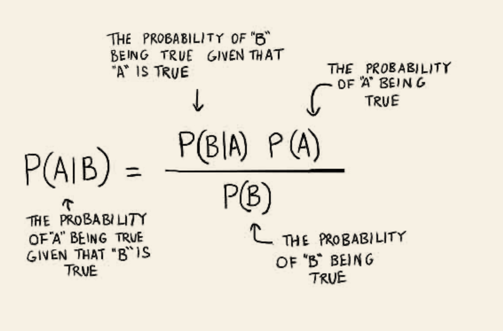
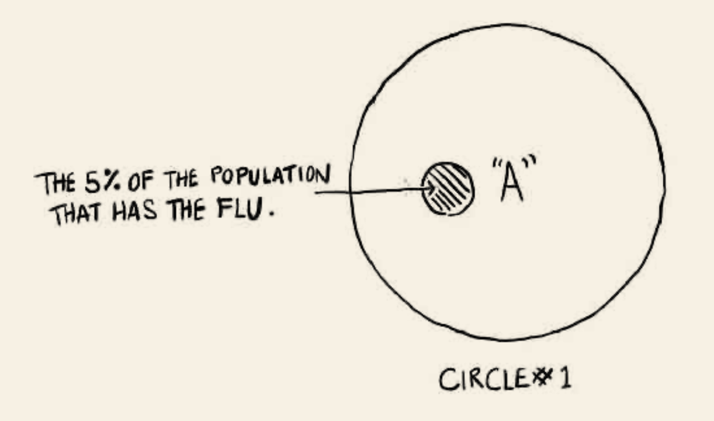
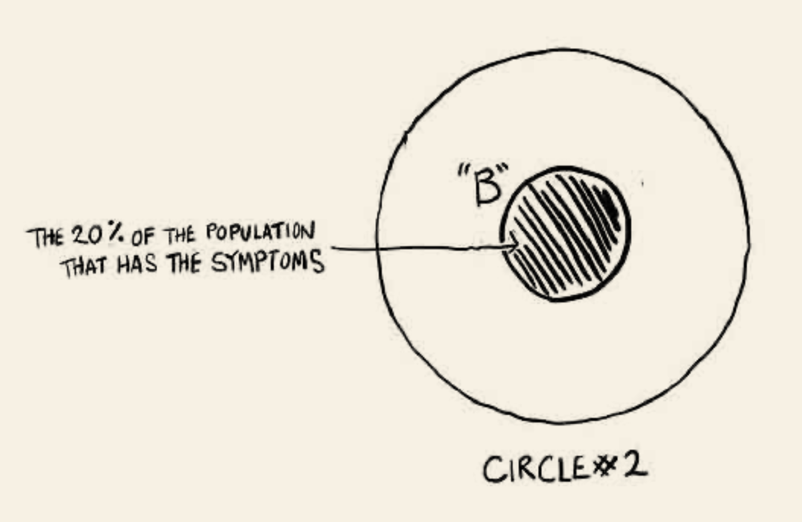
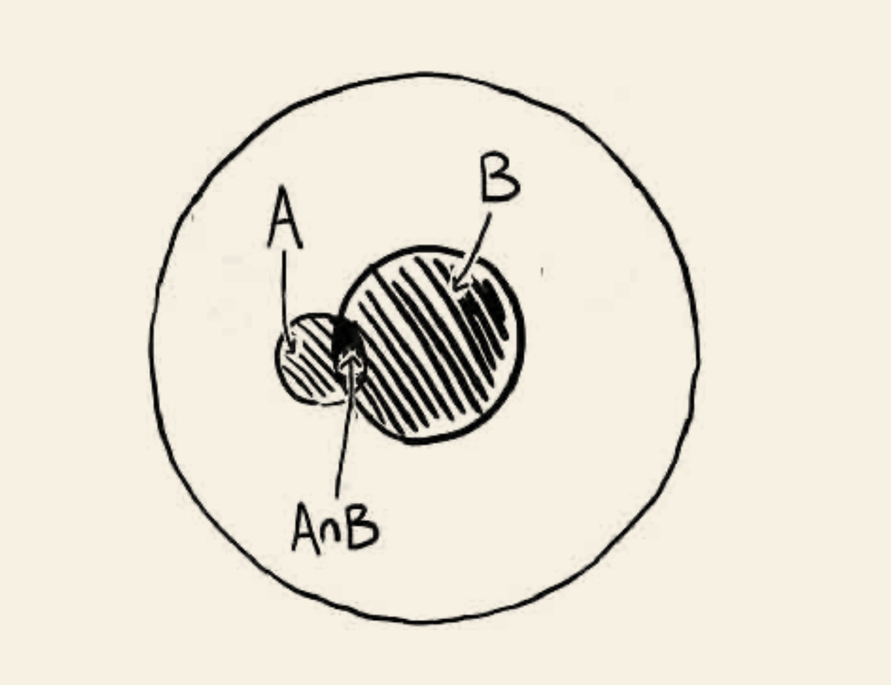
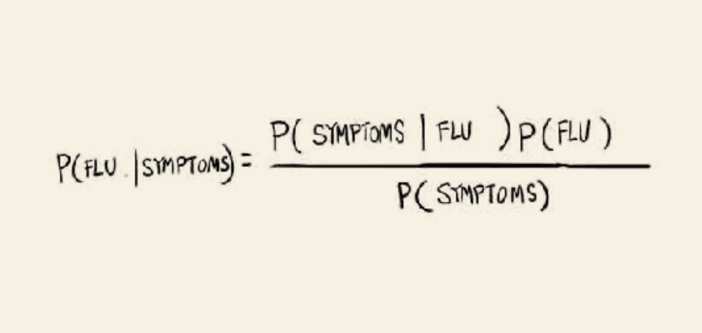
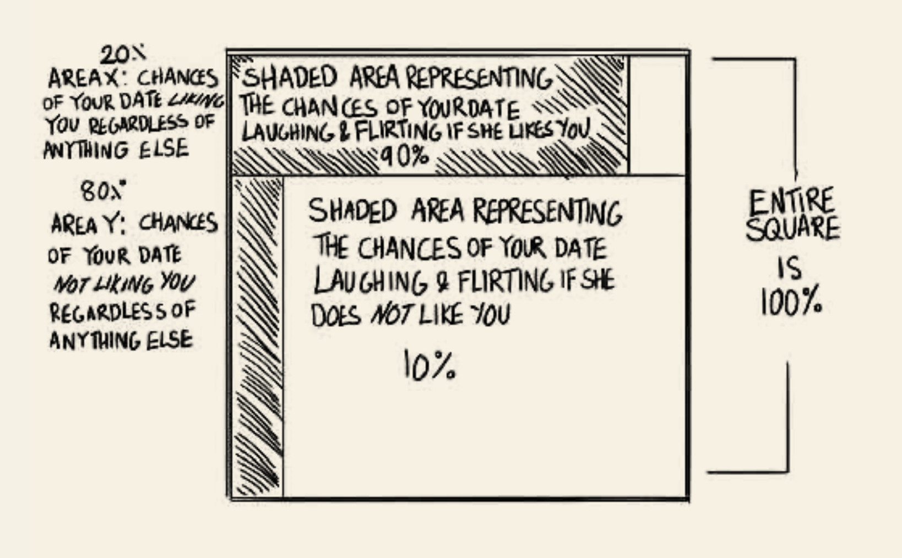

L9. 서비스 기획 및 사용자 조사에 유용한 도구들
실험 및 분석 방법 기초
Minseop Lee(Programs in Cognitive Science, SNU)
2022-11-22(Tue)
강의 내용
- 서비스 기획과 사용자 조사에 유용한 도구들에 대해 알아본다.
직관과 도구사용
- 도구사용은 직관적이지는 않다. 도구 사용에 익숙하기 전까지는… 각종 매듭…
- 지난 시간 강건너기 문제에 대한 해답 알고리즘이 비직관적이나 이 문제를 빈번하게 풀어야 하는 문제라면 여러분 모두는 익숙하게 다룰 것이다
- 도구는 직관을 부스팅해주면 도구의 작동원리를 상세하게 이해할 필요는 없다.
도구의 필요성
- 근거에 기반한 기획
- 초기 학습 비용과 향후 얻게 될 효용의 비교
- 팀내 의사소통의 효율화
- 투자자 등 외부와의 의사소통 효율화
서비스 기획 및 사용자 조사에 유용한 도구들
- 통계적 방법론
- 빈도주의적 통계
- 베이즈주의 통계
- 실험 방법론
유의사항
- 통계적 방법론의 기반이 되는 이론을 모두 알 필요는 없음.
- 컴퓨터의 작동원리를 이해하면서 컴퓨터를 사용하는 사람이 있을까?
- 워드 프로세서 프로그램의 작동원리를 이해하면서 사용하는 사람이 있을까?
- 위의 도구들은 직접 사용해볼 때에만 습득이 되고 내것이 됨
- 연습문제를 푸는 것보다 실제 문제를 풀때 더 도움이 됨.
통계적 추정의 개념
- 진실을 품고 있는 모집단의 분포를 현실적 제약에 의해 파악하기 힘들기 때문에 확인할 수 있는 일정 수의 표본을 뽑은 뒤 그 자료를 가지고 모집단의 분포를 추측해보는 것
- 점추정과 구간추정
통계적 추정의 사례
- 점추정(Point estimation)
- 대한민국 성인 남성의 평균키를 구하기 위해 100명의 표본을 뽑아 평균키를 구했더니 175.6cm가 나왔다. 이를 기반으로 대한민국 성인남성의 평균키가 175.6cm 라고 하는 것
- 구간추정(Interval estimation)
- 점추정의 한계를 보완하는 방법
- 위의 사례를 예로 한다면, 95%(또는 99%) 확률로 대한민국 성인남성의 평균키는 172.6cm에서 178.6cm 사이에 있다.
가설 검정
위의 통계적 추정의 구간 추정을 활용하여 가설을 기각할지 인용할지를 결정하는 과정
도전하려는 원래 가설(분포)를 가정했을때 표본을 통해 관측된 값이 얼마나 말이 안되는 확률인지 보여서 원래 분포가 ’진실’이 아님을 판정하는 작업
귀무가설(\(H_0\)) : 기존에 지지를 받았던 가설
대립가설(\(H_1\)) : 귀무가설이 아닌 가설
보통 귀무가설은 평온한 상태를 가정(무죄추정의 원칙)
- 암이 아니다. 공격 징후가 없다. 스팸이 아니다. 등
가설 검정의 오류가능성
| 구분 | \(H_0\) 가 참일 때 | \(H_0\) 가 거짓일 때 |
|---|---|---|
| \(H_1\) 채택 안함 | 옳은 결정 | 제 2종 오류 |
| \(H_1\) 채택 | 제 1종 오류 | 옳은 결정 |
- 제 1종 오류 : 대안 가설이 틀린데 맞다고 하는 경우 = false positive
- 제 2종 오류 : 대안 가설이 맞는데 틀리다고 하는 경우 = false negative
더 위험한 오류는 무엇일까?
두 오류의 비교
풀숲에 무엇인가 지나간다.(관측)
귀무가설 : 풀숲엔 무서운 무언가가 없다.
대립가설 : 풀숲에 무서운 무언가가 있다.
철수는 대립가설이 무조건 맞다고 하는 제 1종 오류자(겁쟁이)
영희는 대립가설이 무조건 틀리다고 보는 제 2종 오류자(용자)
누가 오래 살아남았을까?
두 오류의 trade-off

비즈니스 영역에서 가설 검증과 오류
해당 서비스(혹은 서비스 내의 특정 기능)에 대한 조사를 할 때를 상상해보자.
철수는 높은 확률로 우리의 서비스에 대한 사용자의 관심, 니즈 등이 존재하고 우리의 기능이 사용성을 증대시킨다고 보는 제 1종 오류자
영희는 높은 확률로 우리의 서비스에 대한 사용자의 관심, 니즈 등이 없고, 우리의 기능이 사용성을 증대시키지 않는다고 보는 제 2종 오류자
누가 더 오래 살아남을까?
상관관계와 인과관계
비즈니스 영역에서 처치의 효과성을 살펴보기 위해서는 인과관계에 대한 추론을 해야함.
하지만 기초 자연과학 실험이 아닌 이상 명확한 인과란 검증하기 쉽지 않음.
따라서 상관관계 등의 약한 통계적 관계에서부터 시작하여 인과라 판단할 수 있는 수준에 이르게 하기 위해 많은 부가적 절차를 거치게 된다.
상관관계의 의미
- 상관관계란 쉽게 말하면 “연동이 되어 있는 것처럼 보인다”라고 할 수 있다.
- 연동이 되어 있는 것처럼 보인다라는 말은 겉으로 보기에 같이 가거나 반대로 가거나 한다는 의미
상관관계의 유의미성 검정
- 상관계수 또한 통계적 추정의 대상이 될 수 있음.
- 진실을 품고 있는 모집단의 분포를 현실적 제약에 의해 파악하기 힘들기 때문에 확인할 수 있는 일정 수의 표본을 뽑은 뒤 그 자료를 가지고 모집단의 분포를 추측해보는 것
- 여기서는 두개 이상의 변수들의 분포
- 샘플로 뽑은 자료들을 통해 모집단의 실제 상관계수를 추정.
- 평균에 대한 추정과 같이 확률적인 형태로 추정.
상관관계의 사례


상관관계 분석 방법
- 상관관계 분석이라는 생각 도구를 구현해주는 도구들
- 엑셀, R, Python… (손으로도 가능, 눈으로는 글쎄…)
좋은 도구의 조건
- 쉽게 분석을 루틴화할 수 있고,
- 필요하면 이론적 배경에 대해서도 확인할 수 있고,
- 분석자료를 왜곡없이 쉽게 확인할 수 있는,
Exploratory!
- 탐색적 데이터 분석(Exploratory Data Analysis, EDA)
- routinizing!!
Exploratory로 간단한 상관분석
- table 형태로 된 자료 준비(Excel file, CSV, TXT 등등)
- import
- 분석. 끝!
Exploratory로 간단한 상관분석
- 키와 부모님의 키의 상관관계
- 지역별 날씨자료
A/B 테스트(빈도주의적 접근)
A/B 테스트는 상관관계 분석보다는 더 나아가 인과관계를 엿보기 위해 수행함.
실험군과 대조군을 나누는 실험적 개입이 필요함.
대조군은 귀무가설을 대표하고, 실험군이 대립가설을 대표한다고 생각하면 됨.(물론 베이스가 되는 가설이 바뀌어도 무방하다.)
실험군과 대조군에 행한 처치를 통해(표본 수준) 결과에 있어서 실제 차이를 만들어냈는지(모집단)를 확인하는 작업
t test, Chi-square test
t-test
- 두 집단의 평균이 유의미한 차이를 보이는지 검정
- 특정 기능 및 디자인 적용결과 실험군이 가지게 된 속성(예를 들어 선호도)에 유의미한 영향을 주었는가?
Chi-square test
- 두 집단의 비율이 유의미한 차이를 보이는지 검정
- 특정 기능 및 디자인 적용 결과 달라진 전환고객의 비율이 유의미한가?
빈도주의적 A/B 테스트의 한계
We need to know how much of the data we need to collect for the test before starting the test.
We can’t evaluate the result in real-time as we go, instead we need to wait to make any decision until we collect a full of the planned data size.
The test result is not intuitively understandable especially for those without a statistical background. (What is P-value again?)
The test result can be read as black and white, either it is statistically significant or not. This makes it hard to figure out what to do especially when not statistically significant.
베이지언 통계의 기초
독감 사례
당신은 머리가 아프고 목이 따끔거렸다. 당신은 코로나에 걸린 사람의 90%가 이러한 증상을 겪는다고 알고 있다. 90%라니!!! 나는 독감에 걸린 것인가?
추가정보를 얻기 위해 구글에 들어가서 1년에 독감에 걸리는 비율을 찾아보니 5%인 것을 알게 되었다. 휴… 독감에 걸릴 확률 5%이니까 안전하겠군…
여기에 더해 1년에 두통과 인후통을 겪는 사람의 비율은 20%라는 정보를 얻게 되었다. 이제 혼란스럽다. 나는 독감일까? 아닐까?
- 당신이 독감일 확률은?
독감 사례
독감 사례
독감 사례
독감 사례
Quiz! 소개팅 사례
길동이는 오랜만에 소개팅 자리에 나갔다. 잘 차려입고 기대에 부푼 마음에 식사 장소에서 상대를 만났다. 길동이는 그녀가 너무 맘에 들었지만 그럴수록 그녀가 나에게 관심이 없을 것이라고 지레 짐작하게 되었고 그러다보니 더 의기소침해지는 것만 같았다. 그래도 식사 중에 좋은 대화들이 오갔고, 식사가 끝나갈 즈음에는 환한 미소와 함께 다음을 기약하는 것과 같은 암시의 말을 하기도 하였다. 그래서 그는 그녀와 헤어지는 순간 머리속이 복잡해졌다. 과연 그녀는 나를 맘에 들어할 것인가? 나는 다시 데이트 신청을 해도 될까? 😂
Quiz! 소개팅 사례
- 추가정보
- 여성들이 길동이를 좋아할 확률 : 20%
- 여성이 호감이 있을때 미소와 추파를 던질 확률: 90%
- 여성이 호감이 없을때 미소와 추파를 던질 확률 : 10%
Quiz! 소개팅 사례 정답
베이지언 A/B 테스트의 장점
- 개선이 있는지 없는지가 아니라 얼마만큼의 개선이 있는지,
- 유의미함이 나타나지 않아도 의미 있는 결과일 수 있음.
베이지언 A/B 테스트 과정
- 사후확률 계산
- 사후확률 판단
- 판단에 따른 실험종료 여부 결정
베이지언 A/B 테스트의 적용
- 실험을 진행하면서 실시간으로 개선율을 추적
- 개선율이 안나오면 실험 종료
- 유의미하지는 않아도 한쪽 안이 더 좋게 나오는 경우는?
- 의사결정을 통해 발생할 비용이 크지 않을 경우 좋은 안을 선택 진행
- 비용이 큰 경우 실험을 좀 더 진행
베이지언 A/B 테스트 실습
in Exploratory
- 게임의 버전에 따른 retention율 테스트
Exploratory
간단한 자료 분석,
A/B 테스팅의 생활화
대쉬보드 등 구현으로 의사소통의 허브
등등
…
사이트에서 더 많은 자료와 튜토리얼 확인가능
잘못된 통계 분석과 시각화 사례
- 적합한 방법을 사용하지 않았거나,
- 결과를 교묘하게 변형하는 사례


잘못된 통계 분석의 사례
- 좋은 도구를 써야함.
- 용도에 맞는 칼을 쓰자
- 디자인 툴로 자료를 시각화하지는 말자(적어도 내부적인 소통을 할 때에는)
- 외부적으로는…??
심리학 실험 도구들
- 기만 실험
- 프라이밍
Social Desirability Bias
- 자기보고식 심리검사나 설문에 응답할 때, 사회적으로 바람직한 특성을 가지고 있는 것으로 자기묘사를 하는 경향성
- 이기적 편향과 도덕적 편향
기만실험의 사례, 선한 사마리아인 사례
달리와 베이트슨은 프린스턴 신학대학 학생들을 피험자로 선정하고 그들 중 절반에게는 선한 사마리아인에 관한 설교를 하라는 과업을 주었고, 나머지에게는 이와 관계없는 설교 과제를 주었다. 피험자들이 설교를 하러 가는 길엔 강도에게 습격을 당한 듯 보이는 사람이 쓰러져 있는 상황을 연출해놓았다. 이 사람은 실험자들의 지시에 따라 피험자들이 지나갈 때마다 기침을 두 번 하고 신음 소리도 냈다. 상식적으론 선한 사마리아인에 관한 설교를 하기로 되어 있는 학생들이 쓰러져 있는 사람에게 도움을 더 많이 줄 것 같지만, 실제 나온 결과는 딴판이었다. 도움을 준 비율을 결정한 변수는 설교의 주제가 아니라, 오직 설교 시작 전까지 남은 시간이었다.
기만실험의 짝궁, debriefing
- 기만실험을 수행하게 되면 반드시 참여자에게 사후 설명으로 실제로 측정 및 관찰하려고 했던 것이 무엇이었고 왜 기만의 방법을 썼는지 알리고, 그에 맞는 맞는 보상과 함께 실험결과를 사용하는 것에 대해 재동의를 얻어야 함.
<차라투스트라는 이렇게 말했다.> 니체
창조하는 것. 이것이야말로 고통으로부터의 위대한 구원이며 삶을 가볍게 만드는 것이다. 하지만 창조하는 자가 되기 위해서는 고통과 많은 변신이 필요하다. 그렇다. 그대 창조하는 자들이여. 그대들의 삶에는 수많은 고통스런 죽음이 있어야 한다. 그리하여 그대들은 그 모든 무상함의 대변자가 되고 옹호자가 되어야 하는 것이다.
감사합니다
UX와 서비스 기획